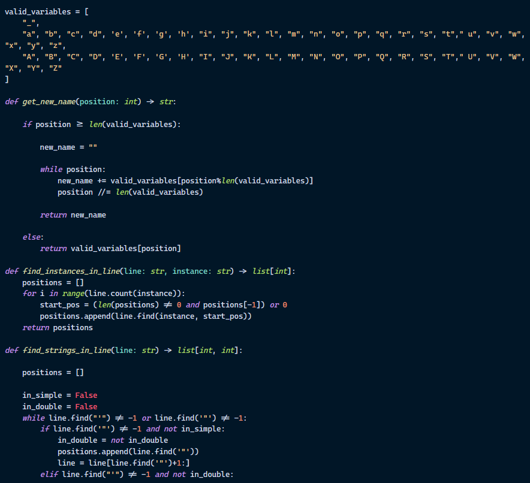
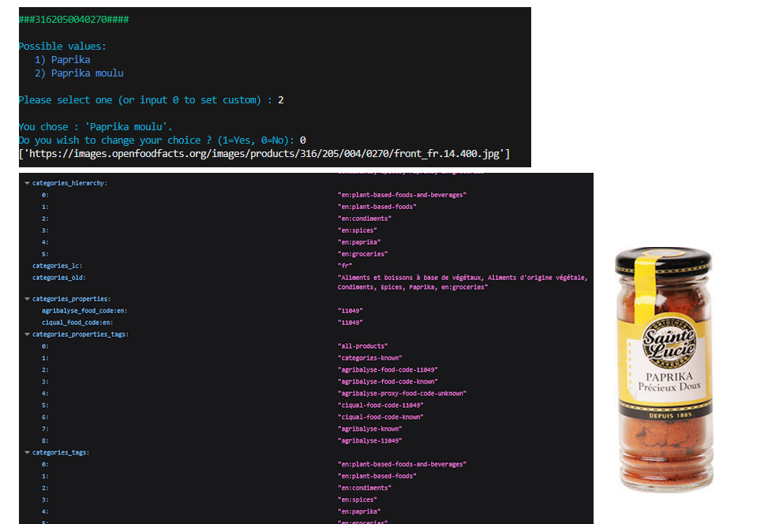
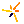
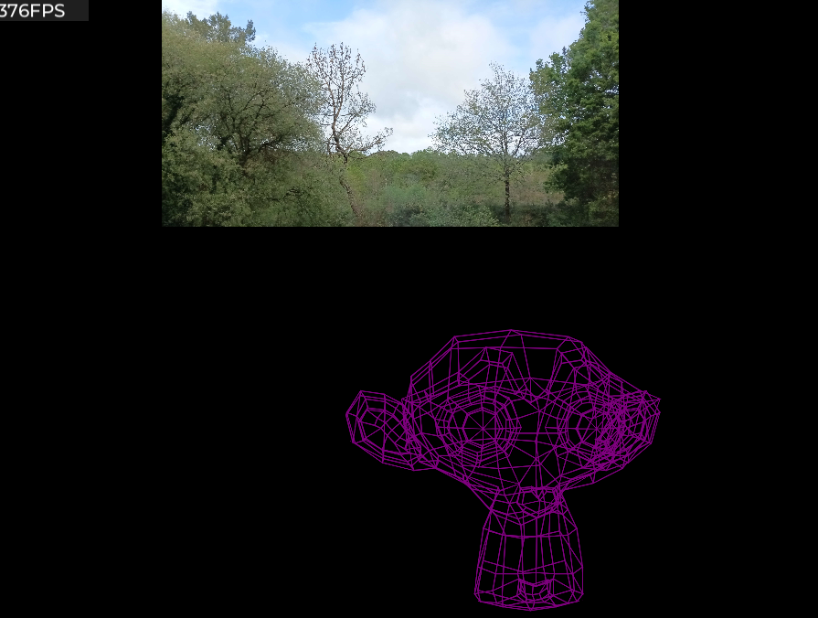

Introduction
Retrouvez ici une liste de projets que je mène dans mon temps libre.
Je m'interrèse grandement à la création de logiciels et d'utilitaires.
Ces programmes me servent concrètement dans d'autres projets plus larges comme mon pricipale actuellement : Une application web avec une interface sous la forme d'une application sur mobile
Liste
Tags |
Septembre 2025
Minify
Février 2026 - aujourd'hui

Librairie python qui cherche à réduire la taille d'un fichier de code en supprimant :
les espaces non nécessaire, les commentaires...
Inventory
Août 2025 - Octobre 2025

Programme en ligne de commande, à partir d'un codebar, trouve des informations sur le produit : nom, image, qualités nutritives...
Utilise les données présente sur OpenFoodFacts
(Exemple avec un bocale d'épice)
Instances |

Mars 2025 - aujourd'hui

Système orienté objet qui facilite la création d'environement 3D et 2D.
Existe en deux version, compatibles respectivement avec Löve2D (v.11.5) et Solar2D.
Cela permet de créer un seul fichier qui peut être utilisé par les deux moteurs par l'intermédiaire du système Instances.
(Exemple avec une image, un text et un modèle 3D)
Heat |
Août 2025 - aujourd'hui
Software Tunel |
Juillet 2025 - aujourd'hui